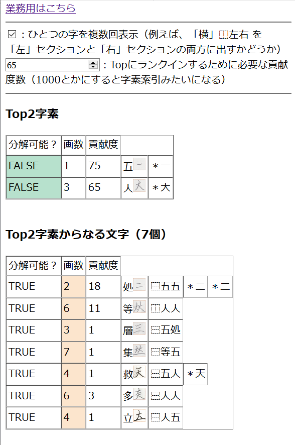

2019年8月29日ぐらいにSYと「手の込んだマニソマ」という概念について話した気がする。これを書いているのが今2020年3月17日であり何も覚えていないというのがある。
どういうのかというと、まあ要するに今までの燐字のデータをもとに、ありそうな燐字を帰納し、造字造語に役立てるというものである。それをjekto.vatimelijuが提案したところ、「手の込んだマニソマじゃん」とSYに言われ、その名前が定着した。
今のところのlinzi_compositionデータは、
type id = string;
interface Composition {
[key: string]: {
isDecomposable: boolean,
strokeCount: number | id[],
hanzi: string,
composition: string[]
};
}
として格納されている。このstrokeCountが数であるような字はその画数が、そうでない字はid[]の指しているID上の画数が総計されてlinzi_compositionに表示されるという仕組みになっているわけだ。一部抜粋すると、
{
D3: { "isDecomposable": false, "strokeCount": 1, "hanzi": "五", "composition": ["＊一"] },
D4: { "isDecomposable": false, "strokeCount": 3, "hanzi": "人", "composition": ["＊大"] },
D12: { "isDecomposable": true, "strokeCount": ["D3", "D3"], "hanzi": "処", "composition": ["⿱五五", "＊二", "＊ニ"] },
D24: { "isDecomposable": true, "strokeCount": ["D4", "D4"], "hanzi": "等", "composition": ["⿰人人"] },
D80: { "isDecomposable": true, "strokeCount": ["D3", "D12"], "hanzi": "層", "composition": ["⿱五処"] },
D83: { "isDecomposable": true, "strokeCount": ["D24", "D3"], "hanzi": "集", "composition": ["⿱等五"] },
D137: { "isDecomposable": true, "strokeCount": ["D3", "D4"], "hanzi": "救", "composition": ["⿱五人", "＊天"] },
D156: { "isDecomposable": true, "strokeCount": ["D4", "D4"], "hanzi": "多", "composition": ["⿱人人"] },
D167: { "isDecomposable": true, "strokeCount": ["D4", "D3"], "hanzi": "立", "composition": ["⿱人五"] }
}
であり、これをlinzi_composition_with_duplicateがこうやって↓
表示してくれているというわけである。いわゆるJSON色付け係というやつである。
ということで、まずはid[]になっているような、つまり、画数を複数の字素から導出するような、字を数えて、Laplace's rule of succession で complex な字であるかどうかだけ判定してくれるようなコードを2019年8月29日に書いた…と思ったら計算ミスってるね。分母に足すべきは1ではなく2である。